1. EDA#
import os
# Token de kaggle
os.environ['KAGGLE_API_TOKEN'] = 'KGAT_50cfd9f4e502c15625d7bd91dd537fbd'
!pip install kaggle -q
# Listar archivos del dataset
!kaggle datasets files wordsforthewise/lending-club
# Descargar dataset completo
!kaggle datasets download wordsforthewise/lending-club \
-p data/lending_club --unzip -q
name size creationDate
------------------------------------------------------- ---------- --------------------------
accepted_2007_to_2018Q4.csv.gz 392582231 2019-12-17 23:30:10.124000
accepted_2007_to_2018q4.csv/accepted_2007_to_2018Q4.csv 1675133810 2019-04-10 18:09:09.272000
rejected_2007_to_2018Q4.csv.gz 255470782 2019-12-17 23:30:04.004000
rejected_2007_to_2018q4.csv/rejected_2007_to_2018Q4.csv 1782281620 2019-04-10 18:09:22.367000
Dataset URL: https://www.kaggle.com/datasets/wordsforthewise/lending-club
License(s): CC0-1.0
import pandas as pd
import numpy as np
#aqui solo se cargan las columnas que pide el profesor porque luego me quedaba sin espacio
cols_necesarias = [
# Numéricas
'loan_amnt', 'int_rate', 'annual_inc', 'dti',
'fico_range_high', 'emp_length',
# Categóricas
'purpose', 'home_ownership', 'addr_state', 'verification_status',
# Target
'loan_status',
# Extras (por si acaso)
'grade', 'sub_grade', 'term', 'installment',
'open_acc', 'pub_rec', 'revol_bal', 'revol_util',
'total_acc', 'mort_acc', 'pub_rec_bankruptcies',
'funded_amnt', 'issue_d'
]
df = pd.read_csv('data/lending_club/accepted_2007_to_2018Q4.csv.gz',
compression='gzip',
usecols=cols_necesarias,
low_memory=False)
print(f" Filas: {df.shape[0]:,}")
print(f" Columnas: {df.shape[1]:,}")
Filas: 2,260,701
Columnas: 24
#Mostrar las primeras y últimas filas (head(), tail())
print("\n=== PRIMERAS 5 FILAS ===")
display(df.head())
print("\n=== ÚLTIMAS 5 FILAS ===")
display(df.tail())
#Usar info() y describe() para obtener un resumen de tipos de datos
df.info(verbose=True, show_counts=True)
display(df.describe())
#Reportar la dimensión del dataset (número de filas y columnas).
print(f"Dimensión del dataset: {df.shape[0]:,} filas x {df.shape[1]} columnas")
#target
df["default"] = df["loan_status"].apply(lambda x: 1 if x == "Charged Off" else 0)
print("Valores únicos de loan_status:")
print(df["loan_status"].value_counts())
print("\nDistribución del target (default):")
conteo = df["default"].value_counts()
porcentaje = df["default"].value_counts(normalize=True).mul(100).round(2)
display(pd.DataFrame({'Conteo': conteo, 'Porcentaje %': porcentaje}))
=== PRIMERAS 5 FILAS ===
| loan_amnt | funded_amnt | term | int_rate | installment | grade | sub_grade | emp_length | home_ownership | annual_inc | ... | addr_state | dti | fico_range_high | open_acc | pub_rec | revol_bal | revol_util | total_acc | mort_acc | pub_rec_bankruptcies | |
|---|---|---|---|---|---|---|---|---|---|---|---|---|---|---|---|---|---|---|---|---|---|
| 0 | 3600.0 | 3600.0 | 36 months | 13.99 | 123.03 | C | C4 | 10+ years | MORTGAGE | 55000.0 | ... | PA | 5.91 | 679.0 | 7.0 | 0.0 | 2765.0 | 29.7 | 13.0 | 1.0 | 0.0 |
| 1 | 24700.0 | 24700.0 | 36 months | 11.99 | 820.28 | C | C1 | 10+ years | MORTGAGE | 65000.0 | ... | SD | 16.06 | 719.0 | 22.0 | 0.0 | 21470.0 | 19.2 | 38.0 | 4.0 | 0.0 |
| 2 | 20000.0 | 20000.0 | 60 months | 10.78 | 432.66 | B | B4 | 10+ years | MORTGAGE | 63000.0 | ... | IL | 10.78 | 699.0 | 6.0 | 0.0 | 7869.0 | 56.2 | 18.0 | 5.0 | 0.0 |
| 3 | 35000.0 | 35000.0 | 60 months | 14.85 | 829.90 | C | C5 | 10+ years | MORTGAGE | 110000.0 | ... | NJ | 17.06 | 789.0 | 13.0 | 0.0 | 7802.0 | 11.6 | 17.0 | 1.0 | 0.0 |
| 4 | 10400.0 | 10400.0 | 60 months | 22.45 | 289.91 | F | F1 | 3 years | MORTGAGE | 104433.0 | ... | PA | 25.37 | 699.0 | 12.0 | 0.0 | 21929.0 | 64.5 | 35.0 | 6.0 | 0.0 |
5 rows × 24 columns
=== ÚLTIMAS 5 FILAS ===
| loan_amnt | funded_amnt | term | int_rate | installment | grade | sub_grade | emp_length | home_ownership | annual_inc | ... | addr_state | dti | fico_range_high | open_acc | pub_rec | revol_bal | revol_util | total_acc | mort_acc | pub_rec_bankruptcies | |
|---|---|---|---|---|---|---|---|---|---|---|---|---|---|---|---|---|---|---|---|---|---|
| 2260696 | 40000.0 | 40000.0 | 60 months | 10.49 | 859.56 | B | B3 | 9 years | MORTGAGE | 227000.0 | ... | CA | 12.75 | 709.0 | 5.0 | 0.0 | 8633.0 | 64.9 | 37.0 | 3.0 | 0.0 |
| 2260697 | 24000.0 | 24000.0 | 60 months | 14.49 | 564.56 | C | C4 | 6 years | RENT | 110000.0 | ... | FL | 18.30 | 664.0 | 10.0 | 1.0 | 17641.0 | 68.1 | 31.0 | 2.0 | 1.0 |
| 2260698 | 14000.0 | 14000.0 | 60 months | 14.49 | 329.33 | C | C4 | 10+ years | MORTGAGE | 95000.0 | ... | TX | 23.36 | 664.0 | 8.0 | 0.0 | 7662.0 | 54.0 | 22.0 | 1.0 | 0.0 |
| 2260699 | NaN | NaN | NaN | NaN | NaN | NaN | NaN | NaN | NaN | NaN | ... | NaN | NaN | NaN | NaN | NaN | NaN | NaN | NaN | NaN | NaN |
| 2260700 | NaN | NaN | NaN | NaN | NaN | NaN | NaN | NaN | NaN | NaN | ... | NaN | NaN | NaN | NaN | NaN | NaN | NaN | NaN | NaN | NaN |
5 rows × 24 columns
<class 'pandas.core.frame.DataFrame'>
RangeIndex: 2260701 entries, 0 to 2260700
Data columns (total 24 columns):
# Column Non-Null Count Dtype
--- ------ -------------- -----
0 loan_amnt 2260668 non-null float64
1 funded_amnt 2260668 non-null float64
2 term 2260668 non-null object
3 int_rate 2260668 non-null float64
4 installment 2260668 non-null float64
5 grade 2260668 non-null object
6 sub_grade 2260668 non-null object
7 emp_length 2113761 non-null object
8 home_ownership 2260668 non-null object
9 annual_inc 2260664 non-null float64
10 verification_status 2260668 non-null object
11 issue_d 2260668 non-null object
12 loan_status 2260668 non-null object
13 purpose 2260668 non-null object
14 addr_state 2260668 non-null object
15 dti 2258957 non-null float64
16 fico_range_high 2260668 non-null float64
17 open_acc 2260639 non-null float64
18 pub_rec 2260639 non-null float64
19 revol_bal 2260668 non-null float64
20 revol_util 2258866 non-null float64
21 total_acc 2260639 non-null float64
22 mort_acc 2210638 non-null float64
23 pub_rec_bankruptcies 2259303 non-null float64
dtypes: float64(14), object(10)
memory usage: 413.9+ MB
| loan_amnt | funded_amnt | int_rate | installment | annual_inc | dti | fico_range_high | open_acc | pub_rec | revol_bal | revol_util | total_acc | mort_acc | pub_rec_bankruptcies | |
|---|---|---|---|---|---|---|---|---|---|---|---|---|---|---|
| count | 2.260668e+06 | 2.260668e+06 | 2.260668e+06 | 2.260668e+06 | 2.260664e+06 | 2.258957e+06 | 2.260668e+06 | 2.260639e+06 | 2.260639e+06 | 2.260668e+06 | 2.258866e+06 | 2.260639e+06 | 2.210638e+06 | 2.259303e+06 |
| mean | 1.504693e+04 | 1.504166e+04 | 1.309283e+01 | 4.458068e+02 | 7.799243e+04 | 1.882420e+01 | 7.025884e+02 | 1.161240e+01 | 1.975278e-01 | 1.665846e+04 | 5.033770e+01 | 2.416255e+01 | 1.555382e+00 | 1.281935e-01 |
| std | 9.190245e+03 | 9.188413e+03 | 4.832138e+00 | 2.671735e+02 | 1.126962e+05 | 1.418333e+01 | 3.301124e+01 | 5.640861e+00 | 5.705150e-01 | 2.294831e+04 | 2.471307e+01 | 1.198753e+01 | 1.904981e+00 | 3.646130e-01 |
| min | 5.000000e+02 | 5.000000e+02 | 5.310000e+00 | 4.930000e+00 | 0.000000e+00 | -1.000000e+00 | 6.140000e+02 | 0.000000e+00 | 0.000000e+00 | 0.000000e+00 | 0.000000e+00 | 1.000000e+00 | 0.000000e+00 | 0.000000e+00 |
| 25% | 8.000000e+03 | 8.000000e+03 | 9.490000e+00 | 2.516500e+02 | 4.600000e+04 | 1.189000e+01 | 6.790000e+02 | 8.000000e+00 | 0.000000e+00 | 5.950000e+03 | 3.150000e+01 | 1.500000e+01 | 0.000000e+00 | 0.000000e+00 |
| 50% | 1.290000e+04 | 1.287500e+04 | 1.262000e+01 | 3.779900e+02 | 6.500000e+04 | 1.784000e+01 | 6.940000e+02 | 1.100000e+01 | 0.000000e+00 | 1.132400e+04 | 5.030000e+01 | 2.200000e+01 | 1.000000e+00 | 0.000000e+00 |
| 75% | 2.000000e+04 | 2.000000e+04 | 1.599000e+01 | 5.933200e+02 | 9.300000e+04 | 2.449000e+01 | 7.190000e+02 | 1.400000e+01 | 0.000000e+00 | 2.024600e+04 | 6.940000e+01 | 3.100000e+01 | 3.000000e+00 | 0.000000e+00 |
| max | 4.000000e+04 | 4.000000e+04 | 3.099000e+01 | 1.719830e+03 | 1.100000e+08 | 9.990000e+02 | 8.500000e+02 | 1.010000e+02 | 8.600000e+01 | 2.904836e+06 | 8.923000e+02 | 1.760000e+02 | 9.400000e+01 | 1.200000e+01 |
Dimensión del dataset: 2,260,701 filas x 24 columnas
Valores únicos de loan_status:
loan_status
Fully Paid 1076751
Current 878317
Charged Off 268559
Late (31-120 days) 21467
In Grace Period 8436
Late (16-30 days) 4349
Does not meet the credit policy. Status:Fully Paid 1988
Does not meet the credit policy. Status:Charged Off 761
Default 40
Name: count, dtype: int64
Distribución del target (default):
| Conteo | Porcentaje % | |
|---|---|---|
| default | ||
| 0 | 1992142 | 88.12 |
| 1 | 268559 | 11.88 |
1.1. Análisis unidimensional#
1.1.1. Variables numéricas#
import pandas as pd
import numpy as np
import matplotlib.pyplot as plt
import seaborn as sns
from scipy import stats
vars_numericas = ['loan_amnt', 'int_rate', 'annual_inc', 'dti', 'fico_range_high', 'emp_length']
display(df[vars_numericas].describe())
if df['emp_length'].dtype == object:
df['emp_length'] = df['emp_length'].str.extract(r'(\d+)').astype(float)
#VALORES ATÍPICOS
print("OUTLIERS POR MÉTODO IQR \n")
for col in vars_numericas:
serie = df[col].dropna()
Q1 = serie.quantile(0.25)
Q3 = serie.quantile(0.75)
IQR = Q3 - Q1
limite_inf = Q1 - 1.5 * IQR
limite_sup = Q3 + 1.5 * IQR
outliers = serie[(serie < limite_inf) | (serie > limite_sup)]
pct = round(len(outliers) / len(serie) * 100, 2)
print(f"{col:20s} | Límite inf: {limite_inf:>12.2f} | Límite sup: {limite_sup:>12.2f} | Outliers: {len(outliers):>7,} ({pct}%)")
#HISTOGRAMAS
fig, axes = plt.subplots(2, 3, figsize=(16, 10))
axes = axes.flatten()
for i, col in enumerate(vars_numericas):
axes[i].hist(df[col].dropna(), bins=50, color='steelblue', edgecolor='white')
axes[i].set_title(f'Distribución de {col}', fontsize=12)
axes[i].set_xlabel(col)
axes[i].set_ylabel('Frecuencia')
plt.suptitle('Histogramas — Variables Numéricas', fontsize=14, y=1.02)
plt.tight_layout()
plt.show()
#DIAGRAMAS DE CAJA
fig, axes = plt.subplots(2, 3, figsize=(16, 10))
axes = axes.flatten()
for i, col in enumerate(vars_numericas):
axes[i].boxplot(df[col].dropna(), vert=True, patch_artist=True,
boxprops=dict(facecolor='steelblue', color='navy'),
medianprops=dict(color='red', linewidth=2))
axes[i].set_title(f'Boxplot de {col}', fontsize=12)
axes[i].set_ylabel(col)
plt.suptitle('Boxplots — Variables Numéricas', fontsize=14, y=1.02)
plt.tight_layout()
plt.show()
#NORMALIDAD
print("ASIMETRÍA\n")
print(f"{'Variable':20s} {'Asimetría':>12} {'Interpretación':>25}")
print("-" * 60)
for col in vars_numericas:
skew = df[col].dropna().skew()
if abs(skew) < 0.5:
interp = "Normal"
elif abs(skew) < 1:
interp = "Moderada"
else:
interp = "Alta"
print(f"{col:20s} {skew:>12.4f} {interp:>25}")
#segun los resultados de asimetria, annual_inc, dti y fico_range_high necesitan transformaciones
#TASA DE VALORES FALTANTES
nulos = df[vars_numericas].isnull().sum()
pct_nulos = (nulos / len(df) * 100).round(2)
tabla_nulos = pd.DataFrame({
'Nulos': nulos,
'Porcentaje %': pct_nulos,
'Tratamiento': ''
})
# Aplicar umbral (> 30%)
for col in tabla_nulos.index:
pct = tabla_nulos.loc[col, 'Porcentaje %']
if pct > 30:
tabla_nulos.loc[col, 'Tratamiento'] = 'Eliminación'
elif pct > 5:
tabla_nulos.loc[col, 'Tratamiento'] = 'Imputación avanzada'
elif pct > 0:
tabla_nulos.loc[col, 'Tratamiento'] = 'Imputar con mediana'
else:
tabla_nulos.loc[col, 'Tratamiento'] = 'Sin nulos'
display(tabla_nulos)
| loan_amnt | int_rate | annual_inc | dti | fico_range_high | |
|---|---|---|---|---|---|
| count | 2.260668e+06 | 2.260668e+06 | 2.260664e+06 | 2.258957e+06 | 2.260668e+06 |
| mean | 1.504693e+04 | 1.309283e+01 | 7.799243e+04 | 1.882420e+01 | 7.025884e+02 |
| std | 9.190245e+03 | 4.832138e+00 | 1.126962e+05 | 1.418333e+01 | 3.301124e+01 |
| min | 5.000000e+02 | 5.310000e+00 | 0.000000e+00 | -1.000000e+00 | 6.140000e+02 |
| 25% | 8.000000e+03 | 9.490000e+00 | 4.600000e+04 | 1.189000e+01 | 6.790000e+02 |
| 50% | 1.290000e+04 | 1.262000e+01 | 6.500000e+04 | 1.784000e+01 | 6.940000e+02 |
| 75% | 2.000000e+04 | 1.599000e+01 | 9.300000e+04 | 2.449000e+01 | 7.190000e+02 |
| max | 4.000000e+04 | 3.099000e+01 | 1.100000e+08 | 9.990000e+02 | 8.500000e+02 |
OUTLIERS POR MÉTODO IQR
loan_amnt | Límite inf: -10000.00 | Límite sup: 38000.00 | Outliers: 35,215 (1.56%)
int_rate | Límite inf: -0.26 | Límite sup: 25.74 | Outliers: 41,099 (1.82%)
annual_inc | Límite inf: -24500.00 | Límite sup: 163500.00 | Outliers: 110,041 (4.87%)
dti | Límite inf: -7.01 | Límite sup: 43.39 | Outliers: 21,580 (0.96%)
fico_range_high | Límite inf: 619.00 | Límite sup: 779.00 | Outliers: 74,846 (3.31%)
emp_length | Límite inf: -10.00 | Límite sup: 22.00 | Outliers: 0 (0.0%)
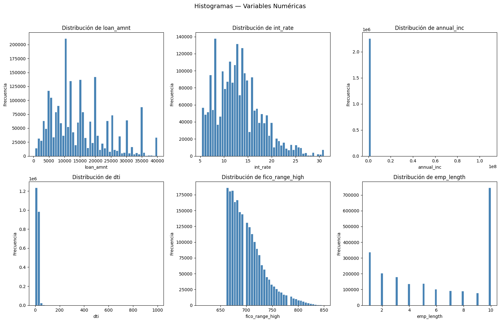
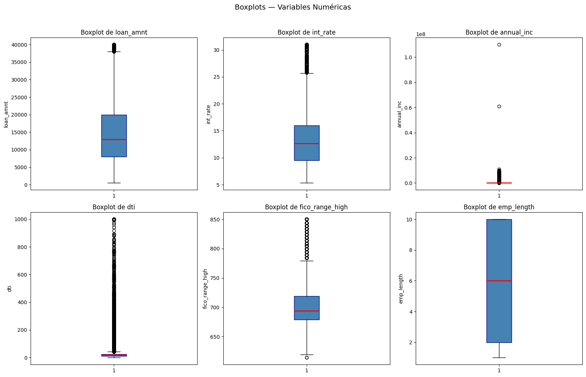
ASIMETRÍA
Variable Asimetría Interpretación
------------------------------------------------------------
loan_amnt 0.7778 Moderada
int_rate 0.7681 Moderada
annual_inc 493.8861 Alta
dti 29.2019 Alta
fico_range_high 1.1931 Alta
emp_length -0.1266 Normal
| Nulos | Porcentaje % | Tratamiento | |
|---|---|---|---|
| loan_amnt | 33 | 0.00 | Sin nulos |
| int_rate | 33 | 0.00 | Sin nulos |
| annual_inc | 37 | 0.00 | Sin nulos |
| dti | 1744 | 0.08 | Imputar con mediana |
| fico_range_high | 33 | 0.00 | Sin nulos |
| emp_length | 146940 | 6.50 | Imputación avanzada |
1.1.2. Variables categóricas#
#Frecuencia absoluta y relativa
vars_categoricas = ['purpose', 'home_ownership', 'addr_state', 'verification_status']
for col in vars_categoricas:
print(f"\n{'='*55}")
print(f" VARIABLE: {col.upper()}")
print(f"{'='*55}")
freq_abs = df[col].value_counts()
freq_rel = df[col].value_counts(normalize=True).mul(100).round(2)
tabla = pd.DataFrame({
'Frecuencia Absoluta': freq_abs,
'Frecuencia Relativa %': freq_rel
})
display(tabla)
#Identificar categorías con muy baja frecuencia que podrían agruparse en una categoría “Otros”. (<1%)
print("CATEGORÍAS CON FRECUENCIA BAJA\n")
for col in vars_categoricas:
freq_rel = df[col].value_counts(normalize=True).mul(100).round(2)
raras = freq_rel[freq_rel < 1]
if len(raras) > 0:
print(f"\n{col}:")
for cat, pct in raras.items():
print(f" '{cat}': {pct}%")
else:
print(f"\n{col}: No hay categorías con frecuencia < 1%")
#Generar gráficos de barras horizontales o verticales para visualizar la distribución.
fig, axes = plt.subplots(2, 2, figsize=(16, 12))
axes = axes.flatten()
for i, col in enumerate(vars_categoricas):
freq = df[col].value_counts()
axes[i].barh(freq.index, freq.values, color='steelblue')
axes[i].set_title(f'Distribución de {col}', fontsize=12)
axes[i].set_xlabel('Frecuencia')
for j, v in enumerate(freq.values):
axes[i].text(v, j, f' {v:,}', va='center', fontsize=8)
plt.suptitle('Variables Categóricas', fontsize=14)
plt.tight_layout()
plt.show()
#Detectar si existen categorías con significado redundante o que puedan unificarse.
#Calcular la tasa de valores faltantes y considerar su tratamiento (moda, categoría “Desconocido”, o eliminación si es muy alta).
print("VALORES FALTANTES — VARIABLES CATEGÓRICAS\n")
for col in vars_categoricas:
nulos = df[col].isnull().sum()
pct = round(nulos / len(df) * 100, 2)
if pct > 30:
decision = 'Eliminar columna'
elif pct > 5:
decision = 'Imputar con categoría Desconocido'
elif pct > 0:
decision = 'Imputar con moda'
else:
decision = 'Sin nulos'
print(f"{col:25s} | Nulos: {nulos:>7,} | {pct:>5}% | {decision}")
=======================================================
VARIABLE: PURPOSE
=======================================================
| Frecuencia Absoluta | Frecuencia Relativa % | |
|---|---|---|
| purpose | ||
| debt_consolidation | 1277877 | 56.53 |
| credit_card | 516971 | 22.87 |
| home_improvement | 150457 | 6.66 |
| other | 139440 | 6.17 |
| major_purchase | 50445 | 2.23 |
| medical | 27488 | 1.22 |
| small_business | 24689 | 1.09 |
| car | 24013 | 1.06 |
| vacation | 15525 | 0.69 |
| moving | 15403 | 0.68 |
| house | 14136 | 0.63 |
| wedding | 2355 | 0.10 |
| renewable_energy | 1445 | 0.06 |
| educational | 424 | 0.02 |
=======================================================
VARIABLE: HOME_OWNERSHIP
=======================================================
| Frecuencia Absoluta | Frecuencia Relativa % | |
|---|---|---|
| home_ownership | ||
| MORTGAGE | 1111450 | 49.16 |
| RENT | 894929 | 39.59 |
| OWN | 253057 | 11.19 |
| ANY | 996 | 0.04 |
| OTHER | 182 | 0.01 |
| NONE | 54 | 0.00 |
=======================================================
VARIABLE: ADDR_STATE
=======================================================
| Frecuencia Absoluta | Frecuencia Relativa % | |
|---|---|---|
| addr_state | ||
| CA | 314533 | 13.91 |
| NY | 186389 | 8.24 |
| TX | 186335 | 8.24 |
| FL | 161991 | 7.17 |
| IL | 91173 | 4.03 |
| NJ | 83132 | 3.68 |
| PA | 76939 | 3.40 |
| OH | 75132 | 3.32 |
| GA | 74196 | 3.28 |
| VA | 62954 | 2.78 |
| NC | 62730 | 2.77 |
| MI | 58770 | 2.60 |
| MD | 54008 | 2.39 |
| AZ | 53777 | 2.38 |
| MA | 51784 | 2.29 |
| CO | 48183 | 2.13 |
| WA | 47060 | 2.08 |
| MN | 39517 | 1.75 |
| IN | 37515 | 1.66 |
| MO | 36084 | 1.60 |
| CT | 35785 | 1.58 |
| TN | 35483 | 1.57 |
| NV | 32657 | 1.44 |
| WI | 29877 | 1.32 |
| SC | 28003 | 1.24 |
| AL | 27284 | 1.21 |
| OR | 26789 | 1.19 |
| LA | 25759 | 1.14 |
| KY | 21887 | 0.97 |
| OK | 20691 | 0.92 |
| KS | 19109 | 0.85 |
| AR | 17074 | 0.76 |
| UT | 14993 | 0.66 |
| MS | 12639 | 0.56 |
| NM | 11986 | 0.53 |
| NH | 11142 | 0.49 |
| HI | 10668 | 0.47 |
| RI | 10005 | 0.44 |
| WV | 8351 | 0.37 |
| NE | 7819 | 0.35 |
| DE | 6458 | 0.29 |
| MT | 6299 | 0.28 |
| DC | 5356 | 0.24 |
| AK | 5231 | 0.23 |
| ME | 4974 | 0.22 |
| VT | 4937 | 0.22 |
| WY | 4748 | 0.21 |
| SD | 4549 | 0.20 |
| ID | 4308 | 0.19 |
| ND | 3591 | 0.16 |
| IA | 14 | 0.00 |
=======================================================
VARIABLE: VERIFICATION_STATUS
=======================================================
| Frecuencia Absoluta | Frecuencia Relativa % | |
|---|---|---|
| verification_status | ||
| Source Verified | 886231 | 39.20 |
| Not Verified | 744806 | 32.95 |
| Verified | 629631 | 27.85 |
CATEGORÍAS CON FRECUENCIA BAJA
purpose:
'vacation': 0.69%
'moving': 0.68%
'house': 0.63%
'wedding': 0.1%
'renewable_energy': 0.06%
'educational': 0.02%
home_ownership:
'ANY': 0.04%
'OTHER': 0.01%
'NONE': 0.0%
addr_state:
'KY': 0.97%
'OK': 0.92%
'KS': 0.85%
'AR': 0.76%
'UT': 0.66%
'MS': 0.56%
'NM': 0.53%
'NH': 0.49%
'HI': 0.47%
'RI': 0.44%
'WV': 0.37%
'NE': 0.35%
'DE': 0.29%
'MT': 0.28%
'DC': 0.24%
'AK': 0.23%
'ME': 0.22%
'VT': 0.22%
'WY': 0.21%
'SD': 0.2%
'ID': 0.19%
'ND': 0.16%
'IA': 0.0%
verification_status: No hay categorías con frecuencia < 1%
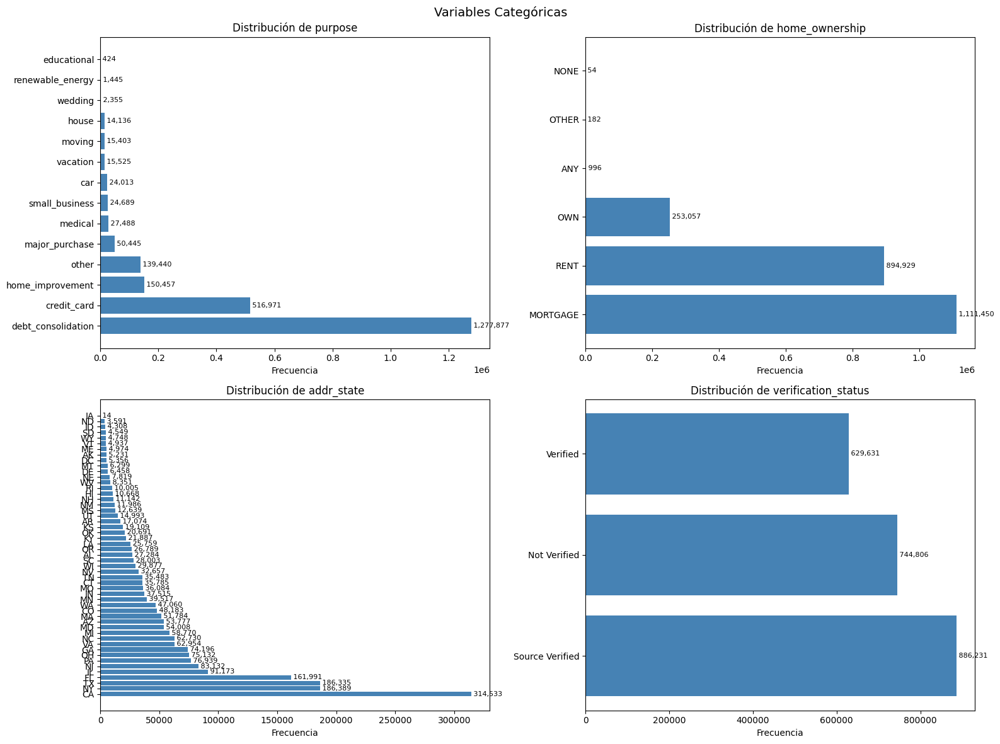
VALORES FALTANTES — VARIABLES CATEGÓRICAS
purpose | Nulos: 33 | 0.0% | Sin nulos
home_ownership | Nulos: 33 | 0.0% | Sin nulos
addr_state | Nulos: 33 | 0.0% | Sin nulos
verification_status | Nulos: 33 | 0.0% | Sin nulos
1.1.3. Variable objetivo#
#Calcular la distribución de clases (0 = Fully Paid, 1 = Charged Off) en valores absolutos y porcentajes.
df_eda = df[df['loan_status'].isin(['Fully Paid', 'Charged Off'])].copy()
df_eda['default'] = (df_eda['loan_status'] == 'Charged Off').astype(int)
conteo = df_eda['default'].value_counts().sort_index()
porcentaje = df_eda['default'].value_counts(normalize=True).sort_index() * 100
dist_target = pd.DataFrame({
'Clase': ['0', '1'],
'Conteo': conteo.values,
'Porcentaje (%)': porcentaje.values.round(2)
})
dist_target.index = ['Fully Paid', 'Charged Off']
print("=" * 55)
print(" DISTRIBUCIÓN DE LA VARIABLE OBJETIVO — default")
print("=" * 55)
print(dist_target.to_string())
print("=" * 55)
print(f" Total de registros válidos: {len(df_eda):,}")
print(f" Desbalance (mayoría/minoría): "
f"{conteo[0]/conteo[1]:.2f}:1")
print("=" * 55)
#Visualizar con un gráfico de barras o pastel.
PALETTE = {'Fully Paid': '#2ecc71', 'Charged Off': '#e74c3c'}
fig, ax = plt.subplots(figsize=(7, 5))
bars = ax.bar(
['Fully Paid\n(0)', 'Charged Off\n(1)'],
conteo.values,
color=[PALETTE['Fully Paid'], PALETTE['Charged Off']],
edgecolor='white', linewidth=1.2, width=0.5
)
for bar, cnt, pct in zip(bars, conteo.values, porcentaje.values):
ax.text(
bar.get_x() + bar.get_width() / 2,
bar.get_height() + conteo.max() * 0.01,
f'{cnt:,}\n({pct:.1f}%)',
ha='center', va='bottom', fontsize=11, fontweight='bold'
)
ax.set_title('Distribución de la Variable Objetivo',
fontsize=10, fontweight='bold')
ax.set_ylabel('Número de préstamos', fontsize=10)
ax.set_ylim(0, conteo.max() * 1.15)
ax.yaxis.set_major_formatter(plt.FuncFormatter(lambda x, _: f'{int(x):,}'))
ax.spines[['top', 'right']].set_visible(False)
plt.tight_layout()
plt.show()
=======================================================
DISTRIBUCIÓN DE LA VARIABLE OBJETIVO — default
=======================================================
Clase Conteo Porcentaje (%)
Fully Paid 0 1076751 80.04
Charged Off 1 268559 19.96
=======================================================
Total de registros válidos: 1,345,310
Desbalance (mayoría/minoría): 4.01:1
=======================================================
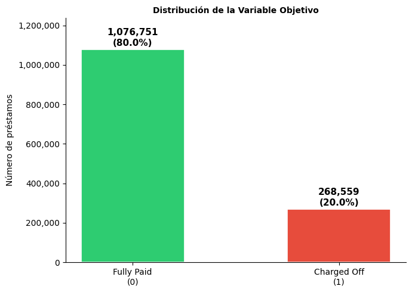
1.2. Análisis bidimensional#
1.2.1. Relación numérica ↔ default#
#Calcular la diferencia de medias entre clases y realizar una prueba t de Student o prueba de Mann-Whitney
#Calcular la correlación punto-biserial entre cada variable numérica y la variable binaria default.
from scipy import stats
import warnings
warnings.filterwarnings('ignore')
vars_num = ['loan_amnt', 'int_rate', 'annual_inc', 'dti',
'fico_range_high', 'emp_length']
clase0 = df_eda[df_eda['default'] == 0]
clase1 = df_eda[df_eda['default'] == 1]
print(" DIFERENCIA DE MEDIAS, PRUEBA MANN-WHITNEY Y CORRELACIÓN PUNTO-BISERIAL \n")
print(f"{'Variable':<20} {'Media_0':>10} {'Media_1':>10} {'Δ Media':>10} "
f"{'p-value':>12} {'Significancia':>6} {'r_pb':>8}")
print("-" * 90)
resultados = {}
for var in vars_num:
s0 = clase0[var].dropna()
s1 = clase1[var].dropna()
media0 = s0.mean()
media1 = s1.mean()
delta = media1 - media0
# Mann-Whitney
stat, pval = stats.mannwhitneyu(s0, s1, alternative='two-sided')
# Correlación punto-biserial
serie_var = df_eda[var].dropna()
serie_def = df_eda.loc[serie_var.index, 'default']
rpb, _ = stats.pointbiserialr(serie_def, serie_var)
sig = 'Muy alta' if pval < 0.001 else ('Alta' if pval < 0.01 else
('Regular' if pval < 0.05 else 'NS'))
resultados[var] = dict(media0=media0, media1=media1,
delta=delta, pval=pval, sig=sig, rpb=rpb)
print(f"{var:<20} {media0:>10.2f} {media1:>10.2f} {delta:>10.2f} "
f"{pval:>12.2e} {sig:>6} {rpb:>8.4f}")
#Generar boxplots comparativos por clase (default = 0 vs 1) para cada variable numérica
fig, axes = plt.subplots(2, 3, figsize=(16, 9))
axes = axes.flatten()
PALETTE = {0: '#2ecc71', 1: '#e74c3c'}
LABELS = {0: 'Fully Paid (0)', 1: 'Charged Off (1)'}
for i, var in enumerate(vars_num):
ax = axes[i]
data_plot = [clase0[var].dropna(), clase1[var].dropna()]
bp = ax.boxplot(data_plot, patch_artist=True, widths=0.5,
medianprops=dict(color='black', linewidth=2),
flierprops=dict(marker='o', markersize=2,
alpha=0.3, linestyle='none'))
for patch, color in zip(bp['boxes'], PALETTE.values()):
patch.set_facecolor(color)
patch.set_alpha(0.7)
r = resultados[var]
sig = r['sig']
ax.set_title(f"{var}\np={r['pval']:.2e} {sig} | r_pb={r['rpb']:.3f}",
fontsize=10)
ax.set_xticks([1, 2])
ax.set_xticklabels(['Fully Paid (0)', 'Charged Off (1)'], fontsize=9)
ax.set_ylabel(var, fontsize=9)
ax.spines[['top', 'right']].set_visible(False)
fig.suptitle('Boxplots - Variables Numéricas por Clase',
fontsize=14, fontweight='bold', y=1.01)
plt.tight_layout()
plt.show()
DIFERENCIA DE MEDIAS, PRUEBA MANN-WHITNEY Y CORRELACIÓN PUNTO-BISERIAL
Variable Media_0 Media_1 Δ Media p-value Significancia r_pb
------------------------------------------------------------------------------------------
loan_amnt 14134.37 15565.06 1430.69 0.00e+00 Muy alta 0.0656
int_rate 12.62 15.71 3.09 0.00e+00 Muy alta 0.2588
annual_inc 77705.95 70400.74 -7305.20 0.00e+00 Muy alta -0.0418
dti 17.81 20.17 2.36 0.00e+00 Muy alta 0.0845
fico_range_high 702.26 691.85 -10.41 0.00e+00 Muy alta -0.1307
emp_length 6.08 5.95 -0.13 1.98e-62 Muy alta -0.0142
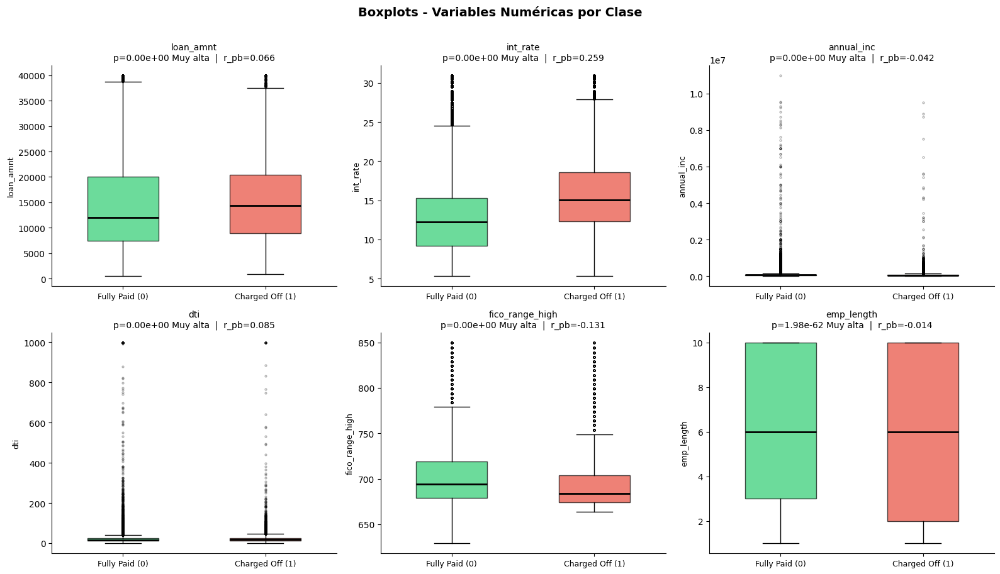
1.2.2. Relación categórica ↔ default#
from scipy.stats import chi2_contingency
vars_cat = ['purpose', 'home_ownership', 'addr_state', 'verification_status']
#PRUEBA DE CHI-CUADRADO
print(" PRUEBA CHI-CUADRADO: VARIABLES CATEGÓRICAS vs DEFAULT \n")
print(f"{'Variable':<22} {'Chi2':>12} {'p-value':>12} {'Significancia':>6} {'V Cramer':>10}")
print("-" * 65)
resultados_cat = {}
for var in vars_cat:
tabla = pd.crosstab(df_eda[var], df_eda['default'])
chi2, pval, dof, _ = chi2_contingency(tabla)
# V de Cramer (magnitud del efecto)
n = tabla.values.sum()
k = min(tabla.shape) - 1
v_cramer = np.sqrt(chi2 / (n * k))
sig = 'Muy Alta' if pval < 0.001 else ('Alta' if pval < 0.01 else
('Regular' if pval < 0.05 else 'NS'))
resultados_cat[var] = dict(chi2=chi2, pval=pval, sig=sig,
v_cramer=v_cramer, tabla=tabla)
print(f"{var:<22} {chi2:>12.2f} {pval:>12.2e} {sig:>6} {v_cramer:>10.4f}")
#TABLAS DE CONTINGENCIA
print("\n TABLAS DE CONTINGENCIA \n")
for var in vars_cat:
tabla = resultados_cat[var]['tabla'].copy()
tabla.columns = ['Fully Paid (0)', 'Charged Off (1)']
tabla['Total'] = tabla.sum(axis=1)
tabla['Tasa Default (%)'] = (tabla['Charged Off (1)'] /
tabla['Total'] * 100).round(2)
tabla = tabla.sort_values('Tasa Default (%)', ascending=False)
print(f" \n {var.upper()}")
print(f" Chi2={resultados_cat[var]['chi2']:.2f} "
f"p={resultados_cat[var]['pval']:.2e} "
f"{resultados_cat[var]['sig']} "
f"V={resultados_cat[var]['v_cramer']:.4f}")
print(f"{'─'*65}")
print(tabla.to_string())
#GRÁFICOS DE BARRAS APILADAS
for var in vars_cat:
tabla = resultados_cat[var]['tabla'].copy()
tabla_pct = tabla.div(tabla.sum(axis=1), axis=0) * 100
tabla_pct.columns = ['Fully Paid (0)', 'Charged Off (1)']
tabla_pct = tabla_pct.sort_values('Charged Off (1)', ascending=False)
if len(tabla_pct) > 15:
tabla_pct = tabla_pct.head(15)
titulo_extra = ' (Top 15)'
else:
titulo_extra = ''
fig, ax = plt.subplots(figsize=(max(8, len(tabla_pct) * 0.7), 5))
tabla_pct[['Fully Paid (0)', 'Charged Off (1)']].plot(
kind='bar', stacked=True, ax=ax,
color=['#2ecc71', '#e74c3c'],
edgecolor='white', linewidth=0.5
)
tasa_global = df_eda['default'].mean() * 100
ax.axhline(tasa_global, color='black', linestyle='--',
linewidth=1.2, label=f'Tasa global ({tasa_global:.1f}%)')
ax.set_title(
f'{var}{titulo_extra}\n'
)
ax.set_xlabel(var, fontsize=10)
ax.set_ylabel('Proporción (%)', fontsize=10)
ax.set_ylim(0, 110)
ax.legend(loc='upper right', fontsize=9, frameon=False)
ax.tick_params(axis='x', rotation=45)
ax.spines[['top', 'right']].set_visible(False)
plt.tight_layout()
plt.show()
PRUEBA CHI-CUADRADO: VARIABLES CATEGÓRICAS vs DEFAULT
Variable Chi2 p-value Significancia V Cramer
-----------------------------------------------------------------
purpose 4144.20 0.00e+00 Muy Alta 0.0555
home_ownership 6743.19 0.00e+00 Muy Alta 0.0708
addr_state 3403.58 0.00e+00 Muy Alta 0.0503
verification_status 11387.44 0.00e+00 Muy Alta 0.0920
TABLAS DE CONTINGENCIA
PURPOSE
Chi2=4144.20 p=0.00e+00 Muy Alta V=0.0555
─────────────────────────────────────────────────────────────────
Fully Paid (0) Charged Off (1) Total Tasa Default (%)
purpose
small_business 10836 4580 15416 29.71
renewable_energy 712 221 933 23.69
moving 7266 2214 9480 23.35
house 5666 1587 7253 21.88
medical 12167 3387 15554 21.78
debt_consolidation 615307 165014 780321 21.15
other 61490 16385 77875 21.04
vacation 7327 1738 9065 19.17
major_purchase 23952 5473 29425 18.60
home_improvement 72002 15502 87504 17.72
educational 270 56 326 17.18
credit_card 245297 49982 295279 16.93
car 12444 2141 14585 14.68
wedding 2015 279 2294 12.16
HOME_OWNERSHIP
Chi2=6743.19 p=0.00e+00 Muy Alta V=0.0708
─────────────────────────────────────────────────────────────────
Fully Paid (0) Charged Off (1) Total Tasa Default (%)
home_ownership
RENT 410347 124074 534421 23.22
OWN 114968 29864 144832 20.62
ANY 230 56 286 19.58
OTHER 117 27 144 18.75
MORTGAGE 551048 114531 665579 17.21
NONE 41 7 48 14.58
ADDR_STATE
Chi2=3403.58 p=0.00e+00 Muy Alta V=0.0503
─────────────────────────────────────────────────────────────────
Fully Paid (0) Charged Off (1) Total Tasa Default (%)
addr_state
MS 4870 1718 6588 26.08
NE 2683 903 3586 25.18
AR 7627 2420 10047 24.09
AL 12687 3926 16613 23.63
OK 9398 2883 12281 23.48
LA 11906 3593 15499 23.18
NY 85629 24213 109842 22.04
NV 15824 4443 20267 21.92
FL 75075 20531 95606 21.47
TN 16021 4364 20385 21.41
IN 17067 4649 21716 21.41
NM 5789 1573 7362 21.37
SD 2177 590 2767 21.32
MD 24573 6654 31227 21.31
MO 16733 4527 21260 21.29
NJ 38216 10233 48449 21.12
KY 10145 2694 12839 20.98
PA 36057 9465 45522 20.79
NC 29931 7853 37784 20.78
OH 34842 9000 43842 20.53
ND 1274 328 1602 20.47
MI 28083 7151 35234 20.30
HI 5392 1365 6757 20.20
VA 30454 7586 38040 19.94
TX 88331 21838 110169 19.82
DE 3036 747 3783 19.75
MN 19236 4732 23968 19.74
AK 2563 627 3190 19.66
AZ 26277 6418 32695 19.63
CA 157988 38540 196528 19.61
MA 25075 5902 30977 19.05
ID 1371 318 1689 18.83
GA 35398 7978 43376 18.39
WI 14478 3254 17732 18.35
IL 42360 9360 51720 18.10
RI 4822 1049 5871 17.87
CT 16300 3428 19728 17.38
UT 8324 1712 10036 17.06
MT 3178 645 3823 16.87
WY 2432 490 2922 16.77
KS 9358 1882 11240 16.74
SC 13389 2603 15992 16.28
WA 24589 4599 29188 15.76
CO 25064 4607 29671 15.53
WV 4121 757 4878 15.52
NH 5509 940 6449 14.58
OR 14046 2360 16406 14.38
IA 6 1 7 14.29
VT 2282 370 2652 13.95
ME 1749 281 2030 13.84
DC 3016 459 3475 13.21
VERIFICATION_STATUS
Chi2=11387.44 p=0.00e+00 Muy Alta V=0.0920
─────────────────────────────────────────────────────────────────
Fully Paid (0) Charged Off (1) Total Tasa Default (%)
verification_status
Verified 318544 99792 418336 23.85
Source Verified 412041 109232 521273 20.95
Not Verified 346166 59535 405701 14.67
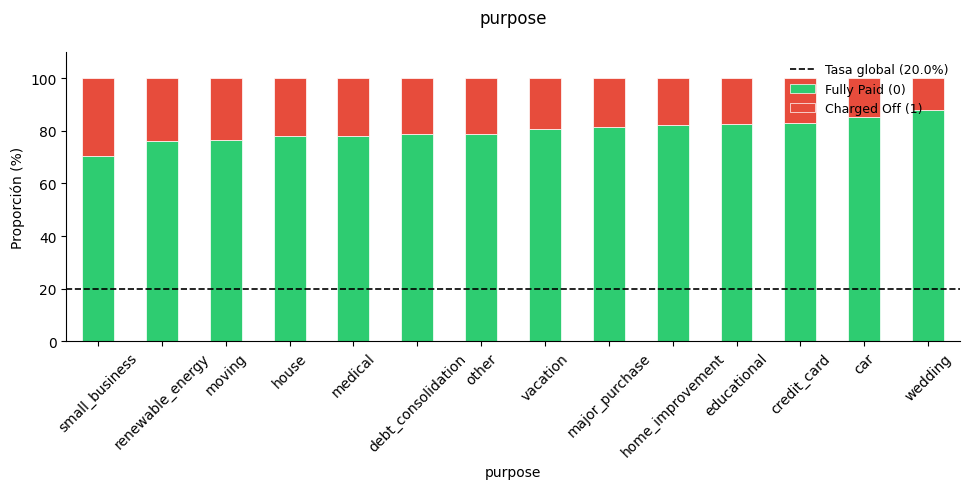
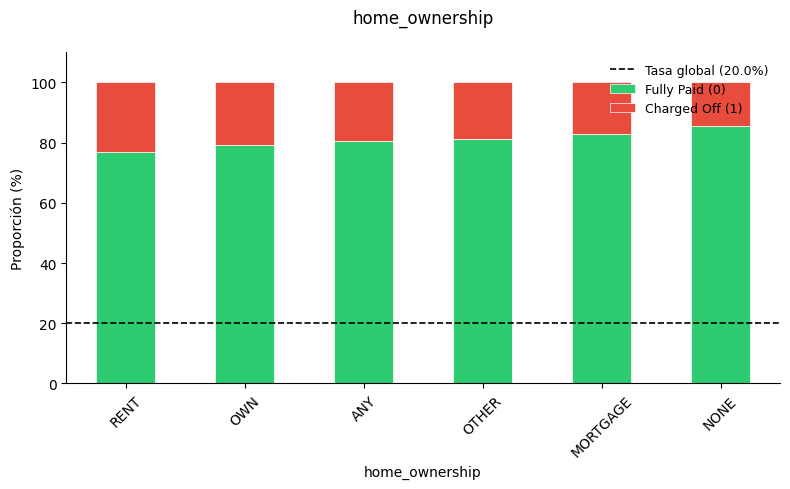
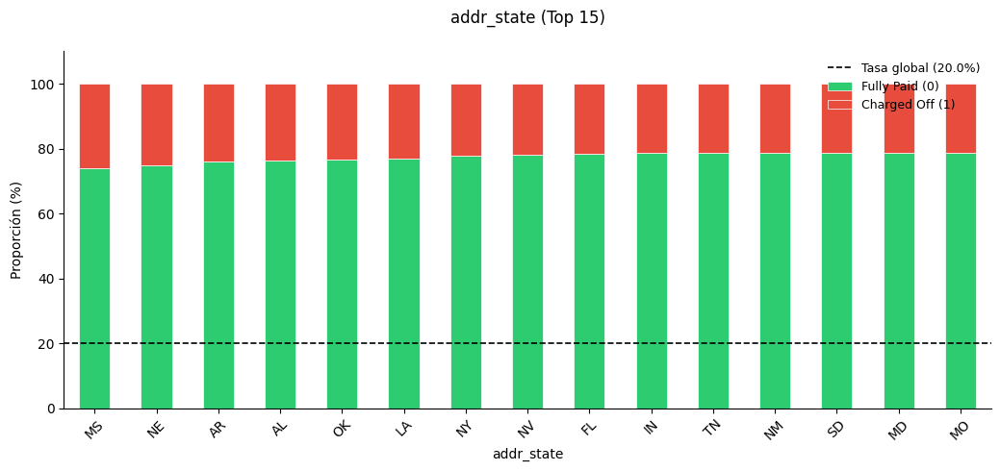
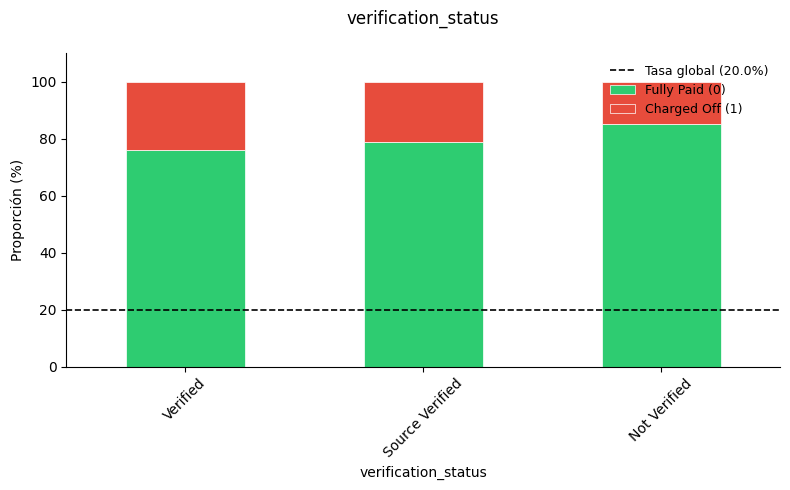
1.2.3. Multicolinealidad#
import seaborn as sns
#CALCULAR MATRIZ DE CORRELACIONES
vars_num = ['loan_amnt', 'int_rate', 'annual_inc', 'dti',
'fico_range_high', 'emp_length']
corr_matrix = df_eda[vars_num].corr(method='pearson')
print(" MATRIZ DE CORRELACIÓN DE PEARSON — VARIABLES NUMÉRICAS \n")
print(corr_matrix.round(4).to_string())
#HEAT MAP
fig, ax = plt.subplots(figsize=(8, 6))
mask = np.triu(np.ones_like(corr_matrix, dtype=bool), k=1)
mask_lower = np.tril(np.ones_like(corr_matrix, dtype=bool), k=-1)
sns.heatmap(
corr_matrix,
annot=True, fmt='.3f',
cmap='coolwarm', center=0,
vmin=-1, vmax=1,
linewidths=0.5,
square=True,
ax=ax,
cbar_kws={'label': 'Correlación de Pearson', 'shrink': 0.8}
)
for i in range(len(vars_num)):
for j in range(len(vars_num)):
if i != j and abs(corr_matrix.iloc[i, j]) > 0.7:
ax.add_patch(plt.Rectangle((j, i), 1, 1,
fill=False, edgecolor='black',
linewidth=2.5, zorder=3))
ax.set_title('Matriz de Correlación de Pearson \n',
fontsize=11, fontweight='bold')
ax.tick_params(axis='x', rotation=45)
ax.tick_params(axis='y', rotation=0)
plt.tight_layout()
plt.show()
#ASOCIACÓN
vars_cat = ['purpose', 'home_ownership', 'addr_state', 'verification_status']
def v_cramer(x, y):
tabla = pd.crosstab(x, y)
chi2, _, _, _ = chi2_contingency(tabla)
n = tabla.values.sum()
k = min(tabla.shape) - 1
return np.sqrt(chi2 / (n * k))
n_cat = len(vars_cat)
v_matrix = pd.DataFrame(np.zeros((n_cat, n_cat)),
index=vars_cat, columns=vars_cat)
for i, v1 in enumerate(vars_cat):
for j, v2 in enumerate(vars_cat):
if i == j:
v_matrix.loc[v1, v2] = 1.0
elif i < j:
v = v_cramer(df_eda[v1], df_eda[v2])
v_matrix.loc[v1, v2] = v
v_matrix.loc[v2, v1] = v
print(" MATRIZ V DE CRAMER — VARIABLES CATEGÓRICAS \n")
print(v_matrix.round(4).to_string())
print("\n PARES CON ASOCIACIÓN NOTABLE (V > 0.1):")
for i in range(n_cat):
for j in range(i+1, n_cat):
v = v_matrix.iloc[i, j]
if v > 0.1:
print(f" {vars_cat[i]} — {vars_cat[j]:<25} {v:>8.4f} ")
#REDUNDANCIAS
MATRIZ DE CORRELACIÓN DE PEARSON — VARIABLES NUMÉRICAS
loan_amnt int_rate annual_inc dti fico_range_high emp_length
loan_amnt 1.0000 0.1417 0.3118 0.0321 0.1010 0.0904
int_rate 0.1417 1.0000 -0.0722 0.1469 -0.4054 -0.0045
annual_inc 0.3118 -0.0722 1.0000 -0.1405 0.0710 0.0663
dti 0.0321 0.1469 -0.1405 1.0000 -0.0619 0.0268
fico_range_high 0.1010 -0.4054 0.0710 -0.0619 1.0000 0.0193
emp_length 0.0904 -0.0045 0.0663 0.0268 0.0193 1.0000
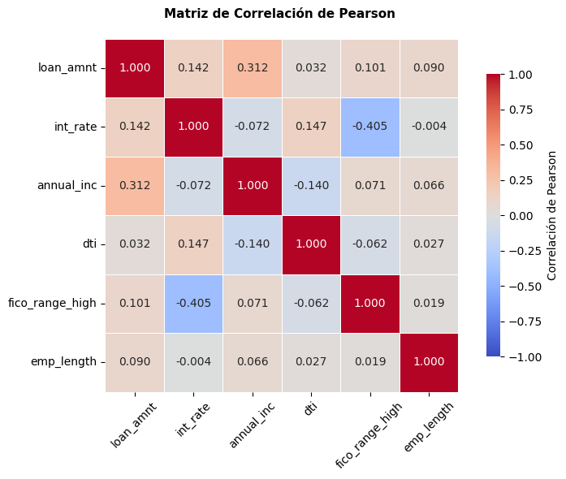
MATRIZ V DE CRAMER — VARIABLES CATEGÓRICAS
purpose home_ownership addr_state verification_status
purpose 1.0000 0.0861 0.0214 0.0618
home_ownership 0.0861 1.0000 0.1113 0.0288
addr_state 0.0214 0.1113 1.0000 0.0214
verification_status 0.0618 0.0288 0.0214 1.0000
PARES CON ASOCIACIÓN NOTABLE (V > 0.1):
home_ownership — addr_state 0.1113
1.2.4. KDE#
#GRÁFICOS DE DENSIDAD (KDE)
vars_kde = ['int_rate', 'fico_range_high', 'dti', 'annual_inc',
'loan_amnt', 'emp_length']
fig, axes = plt.subplots(2, 3, figsize=(16, 9))
axes = axes.flatten()
COLORES = {0: '#2ecc71', 1: '#e74c3c'}
LABELS = {0: 'Fully Paid (0)', 1: 'Charged Off (1)'}
for i, var in enumerate(vars_kde):
ax = axes[i]
for clase in [0, 1]:
datos = df_eda[df_eda['default'] == clase][var].dropna()
# KDE
datos.plot.kde(ax=ax, color=COLORES[clase],
linewidth=2, label=LABELS[clase])
# Área bajo la curva
kde = stats.gaussian_kde(datos.sample(min(len(datos), 50_000),
random_state=42))
x_range = np.linspace(datos.quantile(0.01),
datos.quantile(0.99), 300)
ax.fill_between(x_range, kde(x_range),
alpha=0.15, color=COLORES[clase])
# Línea de mediana
mediana = datos.median()
ax.axvline(mediana, color=COLORES[clase],
linestyle='--', linewidth=1.2, alpha=0.8)
ax.set_title(var, fontsize=11, fontweight='bold')
ax.set_xlabel(var, fontsize=9)
ax.set_ylabel('Densidad', fontsize=9)
ax.legend(fontsize=8, frameon=False)
ax.spines[['top', 'right']].set_visible(False)
xmin = df_eda[var].quantile(0.01)
xmax = df_eda[var].quantile(0.99)
ax.set_xlim(xmin, xmax)
fig.suptitle('KDE por Clase de Default — Variables Numéricas\n'
'(líneas punteadas = mediana por clase)',
fontsize=13, fontweight='bold', y=1.01)
plt.tight_layout()
plt.show()
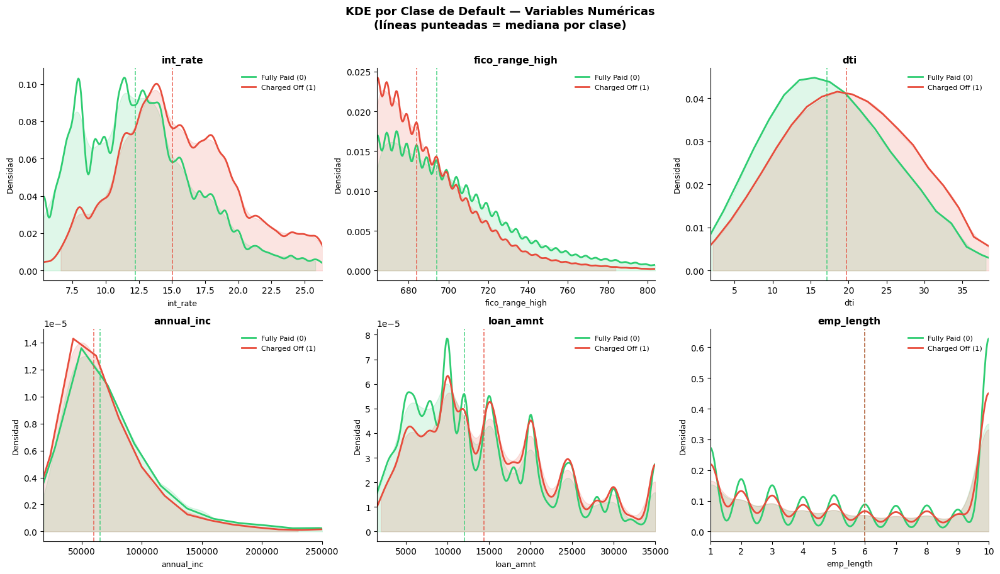
1.3. Valores faltantes#
import missingno as msno
vars_todas = ['loan_amnt', 'int_rate', 'annual_inc', 'dti',
'fico_range_high', 'emp_length',
'purpose', 'home_ownership', 'addr_state',
'verification_status', 'default']
df_miss = df_eda[vars_todas].copy()
#Reportar, para cada columna, el número y porcentaje de valores nulos.
nulos = df_miss.isnull().sum()
porcentaje = (nulos / len(df_miss) * 100).round(4)
dtype_col = df_miss.dtypes
tabla_nulos = pd.DataFrame({
'Tipo' : dtype_col,
'Nulos' : nulos,
'Porcentaje' : porcentaje,
}).sort_values('Porcentaje', ascending=False)
print(" VALORES FALTANTES POR VARIABLE \n")
print(tabla_nulos.to_string())
#Visualizar el patrón de missing values
muestra = df_miss.sample(min(10_000, len(df_miss)), random_state=42)
# 2b. Heatmap de correlación de nulos
fig, ax = plt.subplots(figsize=(9, 6))
msno.heatmap(muestra, ax=ax, fontsize=10, cmap='coolwarm')
ax.set_title('Correlación entre patrones de nulos\n',
fontsize=12, fontweight='bold')
plt.tight_layout()
plt.show()
#Analizar valores faltantes
print(" PRUEBA MCAR \n")
print(f"{'Variable':<22} {'% null_default0':>16} {'% null_default1':>16} "
f"{'p-value':>10} {'Significancia':>6}")
print("-" * 65)
for var in vars_todas:
if var == 'default':
continue
n_nulos = df_miss[var].isnull().sum()
if n_nulos == 0:
print(f"{var:<22} {'—':>16} {'—':>16} {'—':>10} {'Sin nulos':>10}")
continue
# Crear indicador binario de missing
indicador = df_miss[var].isnull().astype(int)
tabla_chi = pd.crosstab(indicador, df_miss['default'])
if tabla_chi.shape == (2, 2):
chi2, pval, _, _ = chi2_contingency(tabla_chi)
sig = 'Muy Alta' if pval < 0.001 else ('Alta' if pval < 0.01 else
('Regular' if pval < 0.05 else 'NS'))
# Tasa de nulos por clase
pct0 = (df_miss[df_miss['default']==0][var].isnull().mean()*100)
pct1 = (df_miss[df_miss['default']==1][var].isnull().mean()*100)
print(f"{var:<22} {pct0:>15.2f}% {pct1:>15.2f}% "
f"{pval:>10.2e} {sig:>6}")
else:
print(f"{var:<22} {'—':>16} {'—':>16} {'solo 1 clase':>10}")
#Plan de tratamiento
VALORES FALTANTES POR VARIABLE
Tipo Nulos Porcentaje
emp_length float64 78511 5.8359
dti float64 374 0.0278
loan_amnt float64 0 0.0000
annual_inc float64 0 0.0000
int_rate float64 0 0.0000
fico_range_high float64 0 0.0000
purpose object 0 0.0000
home_ownership object 0 0.0000
addr_state object 0 0.0000
verification_status object 0 0.0000
default int64 0 0.0000
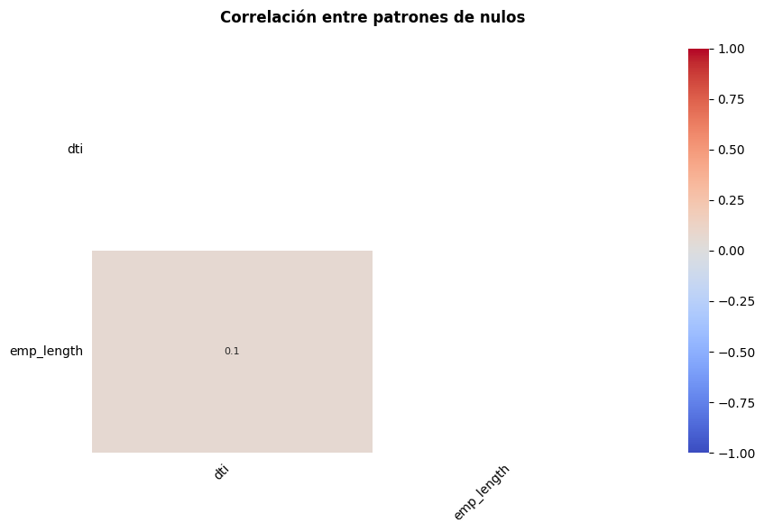
PRUEBA MCAR
Variable % null_default0 % null_default1 p-value Significancia
-----------------------------------------------------------------
loan_amnt — — — Sin nulos
int_rate — — — Sin nulos
annual_inc — — — Sin nulos
dti 0.03% 0.03% 6.83e-01 NS
fico_range_high — — — Sin nulos
emp_length 5.33% 7.87% 0.00e+00 Muy Alta
purpose — — — Sin nulos
home_ownership — — — Sin nulos
addr_state — — — Sin nulos
verification_status — — — Sin nulos
1.4. Análisis#
El dataset de LendingClub (2007–2018) presenta una calidad de datos aceptable para modelado, aunque con varios aspectos que requieren atención. En cuanto a valores faltantes, emp_length es la única variable numérica con nulos significativos (tratables por imputación con mediana), mientras que las variables categóricas no presentan ausencias relevantes. La variable objetivo muestra un desbalance de aproximadamente 4:1 entre Fully Paid y Charged Off, lo que representa el problema más crítico del dataset y anticipa la necesidad de estrategias de balanceo de clases (como class_weight=’balanced’ o submuestreo) para evitar que el modelo se sesgue hacia la clase mayoritaria. En términos de poder predictivo, las variables más prometedoras son int_rate y fico_range_high, que exhiben las diferencias de medias más pronunciadas entre clases, significancia estadística muy alta y las correlaciones punto-biseriales más elevadas; dti y loan_amnt también muestran señal discriminativa aunque más moderada. Entre las variables categóricas, purpose y verification_status presentan asociaciones significativas con el default según la prueba Chi-cuadrado. Se detectaron outliers severos en annual_inc y dti, que requerirán transformación logarítmica o winsorización antes del modelado. La matriz de correlaciones de Pearson no reveló multicolinealidad crítica entre las numéricas, por lo que se conservarán todas las variables seleccionadas. Las decisiones preliminares para el preprocesamiento son: imputar emp_length con mediana, aplicar StandardScaler a todas las numéricas y codificar las categóricas con OneHotEncoder.